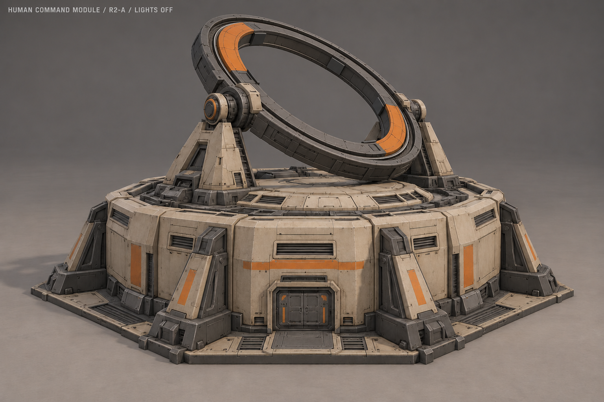
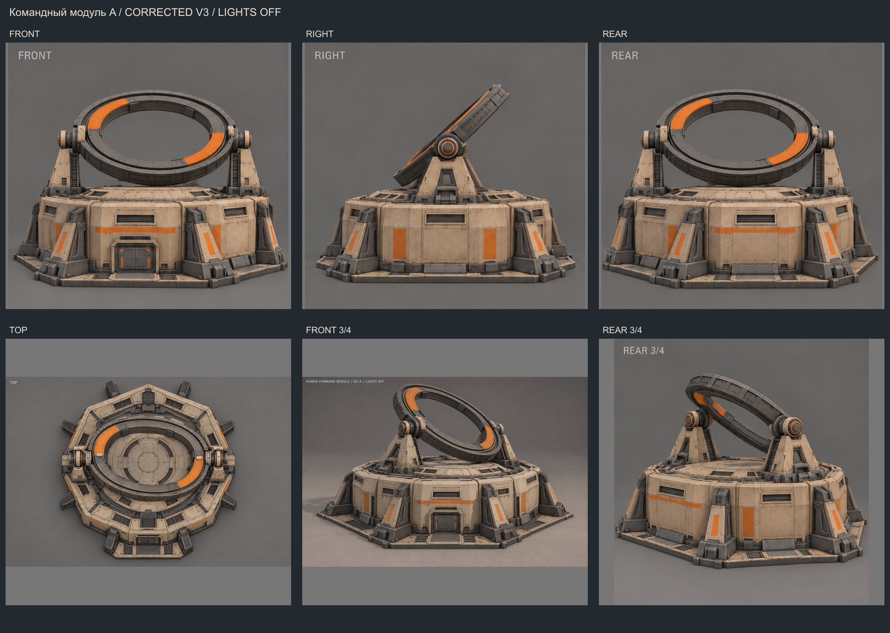

Командный модуль A · исправленные ракурсы V3
29.10.2026 · нейтральные материалы · эффекты выключены
Утверждённый основной 3/4

Исправленный модельный лист

Виды отдельно
Основной 3/4 задаёт выбранный силуэт и соотношения деталей. Все изображения показывают одно состояние покоя; работу механизмов и свет брать из отдельного превью. Это художественные референсы без размерной разметки.